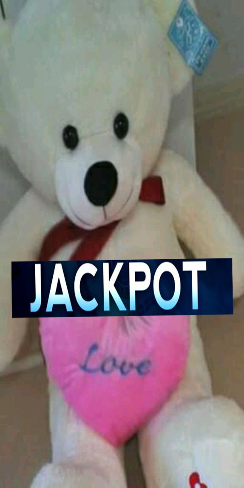

불편한 다리로 인해 비교적 다른 친구들보다 힘든 시절을 겪어야했다.
특히 체육시간에 있어서 그런 것들이 크게 작용했는데, 불편한 다리가 다칠것을
염려한 담임선생님은 다른 친구들이 체육을 할때면 교실에 두거나 먼 곳에 따로 두고
구경하게 하는 정도였다. 하지만 이 시기에는 나이도 너무 어렸을 뿐더러 이게 어떤 상황인지 잘 인지하지 못했고
아무런 감정없이 그냥 시간을 보내버리는 경우가 거의 대부분이었다,
여가 활동으로는 피아노를 치며 보냈는데,피아노를 치는것은 7살이후로 중학교떄까지 계속처서 나름 꽤 긴시간을 피아노학원에서 보내게 된다.
중학교 2008 ~ 2010
하지만 초등학교 졸업과 동시에 중학교를 가게 되자, 사춘기라는 커다란 장벽을 만나게 되는데
사춘기 시절 동네에 있던 학원에서
학교 기말고사 점수가 40점이라며 더이상 못가르치겠다고 하여 쫒겨나는 등 (2008.07.11)
특이한 경험을 하게 된다.
학교에 가자 특수학급 선생님이 운동장에 있는 나에게 다가오셔서 가만히 앉아있는 체육시간에 차라리 컴퓨터를 하면 어떻겠니
?? 라는 제안을 하셨지만
저는 그래도 체육이 좋아요~ 라고 하며 운동장에 계속 있어야겠다고 마음먹었다. 그런데. 이때부터였을까? 평상시에는 느낄수없던 힘든 감정들이 나를 누르기 시작했다.
보통의 평범한 학생이었다면 느낄 필요가 없는 감정들.
혹시 엄마가 어제 문을 쾅 닫고 울던데 그게 만약 내가 다리가 안좋아서 날 키우다 힘들어저서 그런거면 어떡하지 ??
"라는 생각이 들었다..
그렇게 나는 개인적으로 힘들었던 시기를 보내고 해는 1년이 흘러 09년이 되었다.
어느날 체육선생님은 반 아이들에게 자유시간을 주셨는데 체육시간에 , 너희들이 원하는걸 하고 놀라면서 자유시간을 주신거였다.
하지만 나는 갑자기 알수없는 감정이 올라오면서 눈물을 흘리게 된다.
초등학교 입학때부터 느껴온 힘든 순간들이 생각나면서, 체육시간에 느꼈던 외로운 순간들이
한꺼번에 나를 둘러싸고 슬픈 감정을 떠올리게 하는 순간이었다.
그러자 그 당시 체육선생님이었던 선생님께서 마음이 진정될떄까지 차분히 기다려주셨고, 그 날을 기점으로 체육에서 느꼈던 서글픈 감정들을 조금씩
지워나가기 시작한다.
이후에는 불편한 다리떄문에 구경만 해야하는 체육이 아닌
행복한 시간들로 체육시간을 채워나가게 된다. 지금 자세히 말하면 그떄 당시에 감정은 과거에 대한 후회가 너무 심한데 아무도 탓할수없고 혼자서
모든 상처를 안고 가야한다는데서 느낀 서글픔이 심했던것 같다.
고등학교 2011 ~ 2013
그런데 여기서 더욱더 놀라운 일이 벌어진다. 중학교 때 체육선생님 앞에서 많은 눈물을 흘린적이 있었는데,
그때 나를 안아주셨던 그 중학교 선생님이 고등학교 에서도 함께하게 된 것이다.
(2009 ~ 2013) 5년 연속으로 같이 있게 됨

그야말로 로또 당첨,그 순간은 평생 잊을수 없는 행복한 순간이였다. 많은 사람들이 2002년 월드컵 4강을 기억하면 정말 기쁘다고 하지만 나에게는 그보다 더 기쁜 순간을 고르라면 2011년이라고 말할수 있을것 같다.
처음에 입학할때만 하더라도 잘 적응할 수 있을까 걱정됬는데, 적어도 이 학교만큼은 내가 가진 능력보다 훨씬
더 나를 신뢰하고 응원해준 학교라고 생각한다.
학교를 위해 꼭 보답하고 싶다는 생각이 들게 할 정도로
대학교 2014 ~ 2015 ＊2년제 대학
대학교에 들어와서는 막상 시간이 너무 빠르게 흘러갔던것 같다. 컴퓨터과에 입학하여 수업을 성실하게 듣기는 했지만하게 듣기는 했지만
성적은 3.9 ~ 4점대 초반 정도를 유지하였으나 구체적으로 어떤것에 흥미를 느끼는지 몰라서 진로에 대해 구체적이지 못했다는 것이 아쉬운
점이였다..
그리고 또 하나의 변수, 나는 다리가 불편해서 안갔지만 다른 친구들은 거의 대부분 가게 되는것이 있었으니. 그것은 바로 군대..였다.
다른 친구들에 비해 입학은 같이 해놓고 졸업을 혼자 일찍하는 상황이 벌어진다.
"빨리 가려면 혼자 가고, 멀리 가려면 함께 가라" 라는 말이 유난히도 많이 생각나는 시기였다.
군대를 안가니까 졸업은 빨리할 수 있었지만 혼자서 남들 군대가있을떄 뭐라도 해놓아야 한다는 생각에
그 압박감때문이였는지, 빨리 뭘 만들어놔야 한다는 생각에 방향성을 잃은채로
구체적인 계획 없이 그냥 막 하게 되는 상황을 맞이하게 된다 .
군대를 안가니까 졸업은 빨리할 수 있었지만 혼자서 남들 군대가있을떄 뭐라도 해놓아야 한다는 생각에
그 압박감때문이였는지, 빨리 뭘 만들어놔야 한다는 생각에 방향성을 잃은채로 그냥 막 하게 되는 상황을 맞이하게 된다.
대학 졸업이후 2016년 2월 ~ 2017
그떄부터 진짜 혼자가 된것 같았다. 아직도 나는 여전히 뭘 해야 좋을지 모르는 상황에서 예전에 같이 있던 친구들이 돌아오려면 군대에서
최소한 21개월은 보내야 했으므로 친구들은 그떄도 군대생활을 하는 친구들이 많았다.
그러던 중 취업성공패키지 라는것을 하게 되었는데 구체적으로 뭘 하면 좋을지 모르는 상황에서 취업성공패키지 라는 제도를 알게
된다.
하지만 그떄까지만 해도 뭘 해야할지 몰라서, 결국 취업성공패키지에서는 그동안 전공으로 배운 컴퓨터 분야가 아닌 전기자격증 공부를 하게 된다.
전기 분야는 타 자격증에 비해 희소가치가 높다며, 삼촌이 추천해서 시작하게 되었는데. 나의 경우는 다리가 좋지않아 이동에 제악에 있기 때문에
취업을 하기 어렵다고 생각되어서, 그 당시에는 꿈이 없었기도 하고 그래서 시작하게 되었지만,이떄도 커다란 목적성이 없었던 상황이라,백수를
면해야한다는 생각에 하게 전기자격증 학원을 다니게 된다,
하지만 취업성공패키지를 하는 도중 자격증 취득에는 실패했고 이후 기간 만료로 종료가 된다,
2017년에는 운좋게 구청에서 지원해준 스쿠터가 있던 상태라 전동 스쿠터 운전을 위해 이리저리 돌아다니게 되고 하지만, 그 스쿠터를 끌고 멀리
나가기는 여전히 어려운것 같다. 베터리로 움직이기 떄문에 중간에 가다가
길에서 베터리가 달아저 멈춰서면 별다른 대책이 없다. 길을 돌아다니다가 충전할수 있으면 좋겠지만 전기 스쿠터를 꽂아놓을만한 곳이 마땅치 않아
집에서만 충전해야 한다..
그러던 중 2018년부터는 장애인에게 사회적 참여와 소득 보장을 목적으로 마련된 구청의 장애인일자리에
참여하게 된다.
2018년 장애인 복지일자리에 참여하게 된 후
우연한 인터넷 웹 서핑을 하던 중 인터넷에서 기사를 읽게 된다.
장애인에게 사회적 참여와 소득 보장을 목적으로 마련된 구청의 장애인일자리에서
참여자를 모집한다는 공고를 보게 되고 일단은 이력서라도 지원해보자 라는 생각으로 지원 , 합격통보를 받아 일하게 되었다.
그 후 일어난 일들
드디어 2018년이 되서야 첫 직업을 갖게 되었다.
그리고 고용노동부가 주관하는 기능경기대회에 나가게 되는데 첫 출전이라 긴장을 많이한 탓인지 아쉽게 순위입상은 하지 못하였다.
2018년 상반기 이후 이름을 개명하게 되었다.